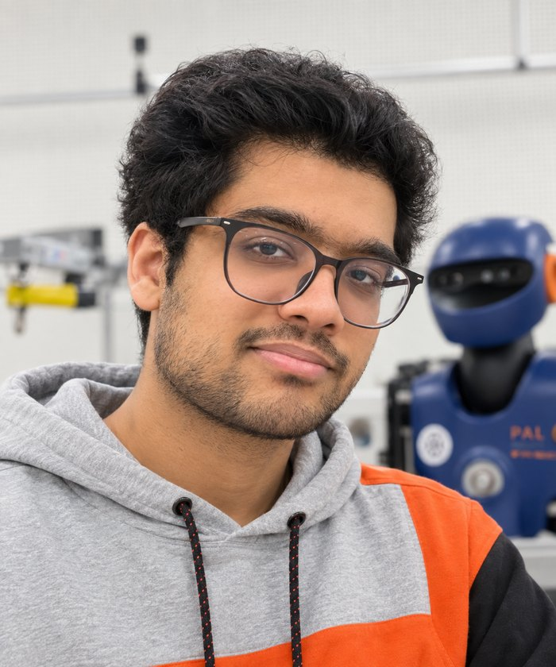
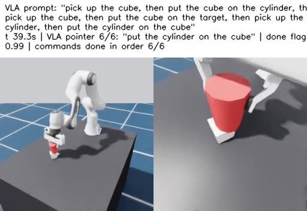
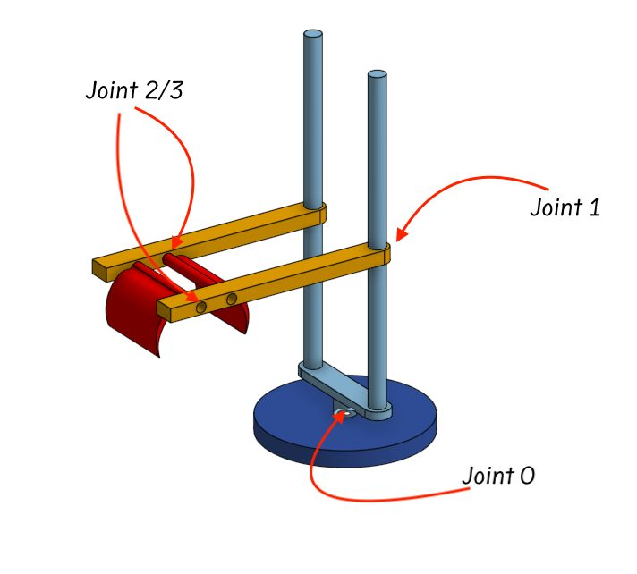
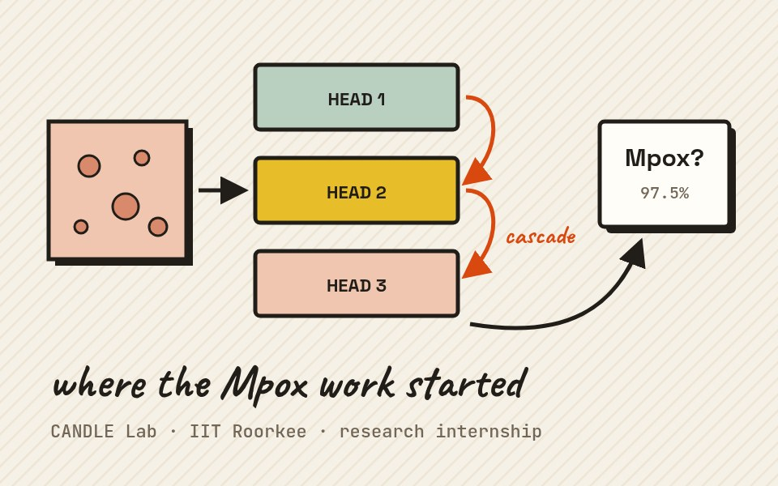
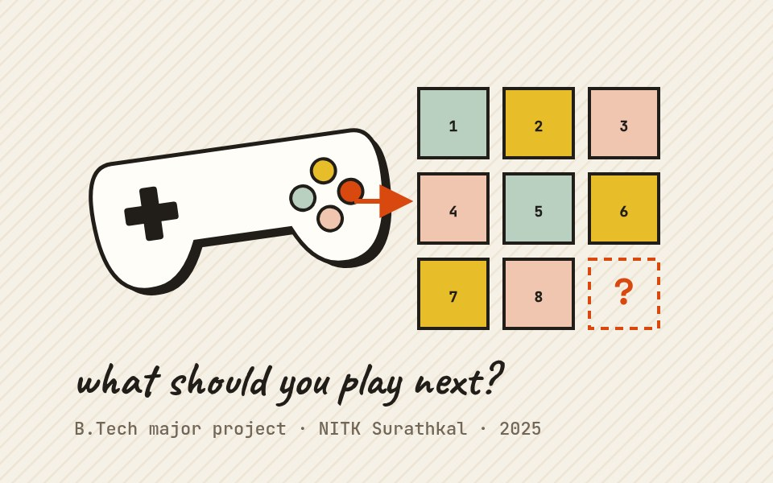
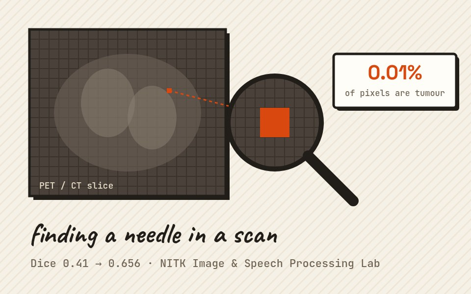

'26

Under review · 2026

I'm a Research Intern in the SLMC Group at the University of Edinburgh, working with Prof. Sethu Vijayakumar and Victor Leve on a project with Kawada Robotics. Their NEXTAGE robot folds cardboard boxes on factory lines, but every new batch of boxes behaves a little differently, and the routine has to be re-engineered each time. I'm working on estimating a box's physical properties from force/torque, vision and touch so the folding generalises across batches, and on removing a 1–2 s inverse-kinematics bottleneck so we can search for trajectory corrections across thousands of parallel MuJoCo rollouts.
Before this I did my MSc in AI at Edinburgh, supervised by Elle Miller and Sethu. I trained a policy entirely in simulation to spin two Baoding balls blind, using only joint proprioception and touch, and deployed it zero-shot on a real Shadow Hand Lite, with no cameras and no real-world training data. That work grew into No Eyes, No Problem, where the policy completes 225 consecutive rotations on the real hand, and along the way I brought the Shadow Hand Lite into the roto 2.0 benchmark (ViTac, ICRA 2026).
Earlier, I did my BTech in IT at NITK Surathkal (2025). My final-year project on RL-based game recommendation with Prof. Anand Kumar M became a COMSNETS paper. I also spent time at the CANDLE lab at IIT Roorkee with Prof. Sparsh Mittal, where the Mpox work started that I later extended into a single-author GCPR paper, and at NITK's Image and Speech Processing Lab with Prof. Jeny Rajan. The thread through all of it: I like problems where a model has to deal with the physical world as it really is, messy, rare or partly unseen.
When I'm not bothering robots, you'll find me walking, eating, sleeping, or rewatching Suits for the hundredth time, always with a coffee in hand (probably one too many).



Phone clips of single skills teach a simulated Franka Panda combined tasks it never saw demonstrated.
Side project
Finding tendon slack in the Shadow Hand Lite and trying three ways to learn it from hardware data.
MSc research
Ten Sutton & Barto algorithms on a custom robot in PyBullet.
Side project
MSc dissertation: blind sim-to-real transfer of a Baoding policy on the Shadow Hand Lite, with 55 rotations in a row on the real hand.

A cascaded attention module for telling Mpox apart from look-alike rashes, built at IIT Roorkee and later extended solo into a GCPR paper.
Research internship · IIT Roorkee
B.Tech major project with Siddharth Kelkar: sequential game recommendation with PPO and discriminators. It became the COMSNETS paper.

Tumour segmentation in PET/CT scans where under 0.01% of pixels are tumour, using a custom loss that took Dice from 0.41 to 0.656.
Research project · NITK